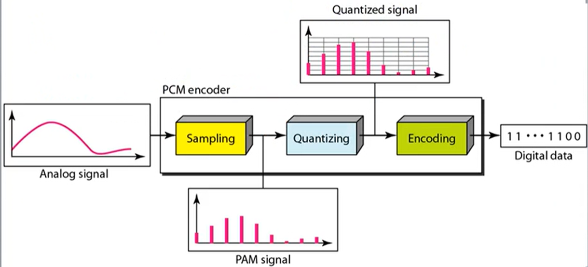
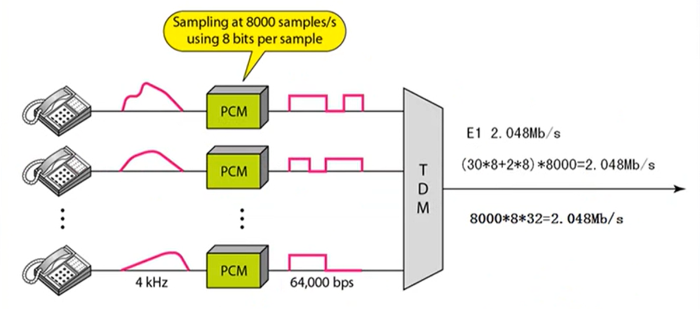
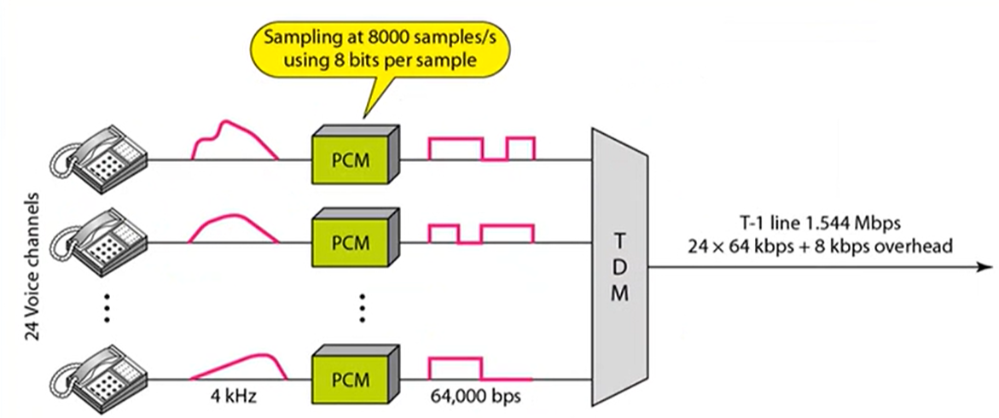
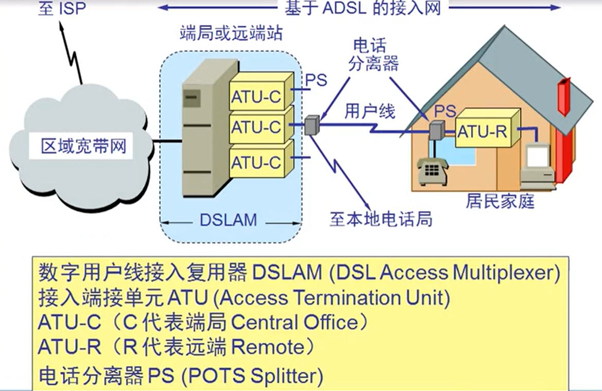
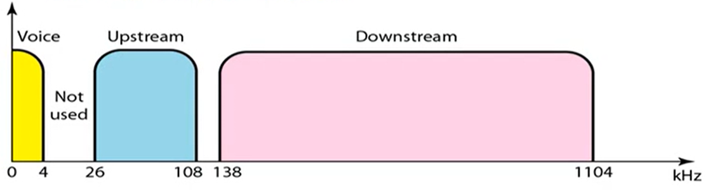
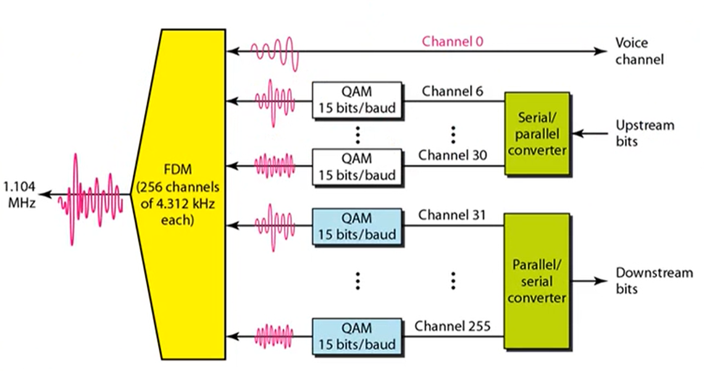
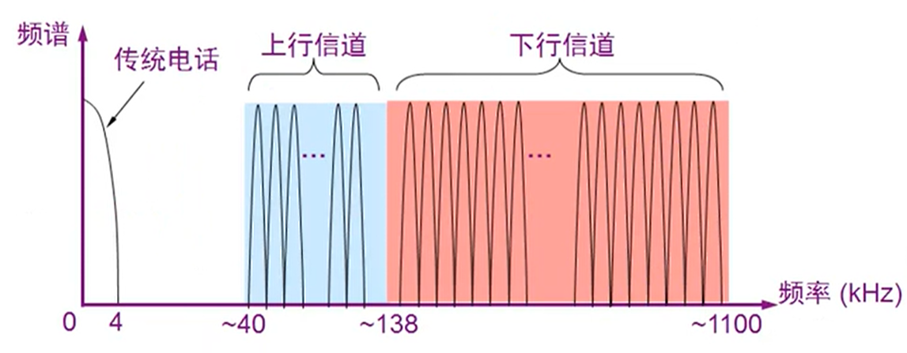
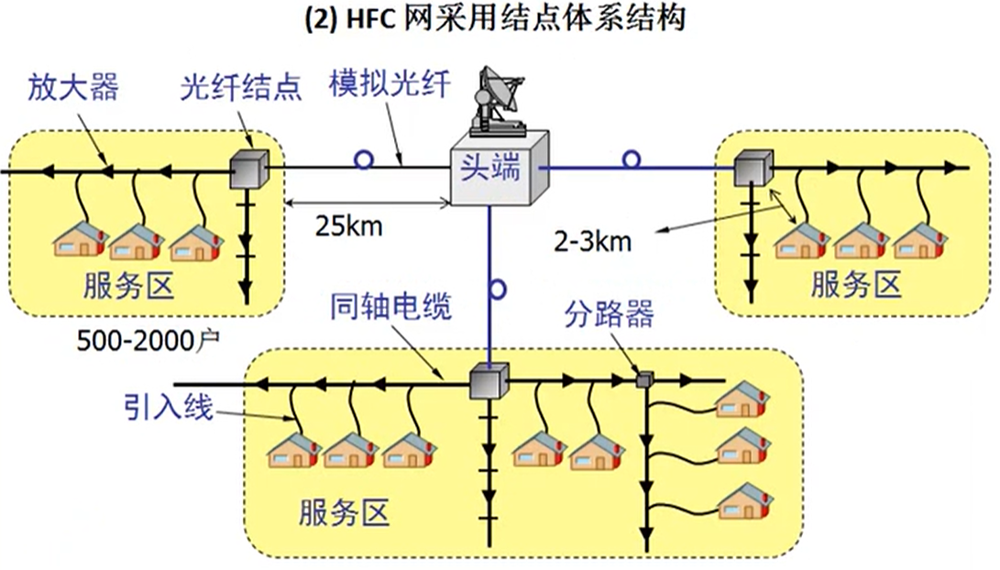

数字传输系统 @
脉码调制 PCM 体制最初是为了在电话局之间的中继线上传送多路的电话。由于历史原因，PCM 有两个互不兼容的国际标准，即北美的 24 路 PCM(简称为 T1)和欧洲的 30 路 PCM(简称为 E1)，我国采用的是欧洲的 E1 标准。 E1 的速率是 2.048mb/s，而 T1 的速率是 1.544Mb/s。 当需要有更高的数据率时，可采用复用的方法。

将用户的声波进行 8000 次采样，然后统计规整每个码元得到二进制代码。
E1 电路(时分复用)

T1 电路

宽带接入技术 @
xDSL(用数字技术对现有的模拟电话用户线进行改造)

标准模拟电话信号的频带被限制在 300-3400hz 范围内，但用户线本身实际可通过的信号频率仍然超过 1Mhz。
xDSL 技术就是把 0-4Khz 低端频谱留给传统电话使用，而把原来没有被利用的高端频谱留给用户上网使用。


DMT 技术 @
DMT 调制技术采用频分复用的方法，将 40kHZ 以上一直到 1.1MHz 的高端频谱划分成许多的子信道，其中 25 个子信道用于上行信道，而 249 个子信道用于下行信道。
每个子信道占据 4Khz 带宽，并使用不同的载波(即不同的音调)进行数字调制，这种做法相当于在一对用户线上使用许多小的调制解调器并行地传送数据。
频谱分布

光纤同轴混合网 HFC(Hybrid Fiber Coax) @
HFC 网是目前覆盖面很广的有线电视网 CATV 的基础上开发的一种居民宽带接入网。
HFC 网除了可传送 CATV 外还提供电话，数据和其他宽带交互型业务。
现有的 CATV 网是树形拓扑结构的同轴电缆网络，它采用模拟技术的频分复用对电视节目进行单向传输，而 HFC 网则需要对 CATV 网进行改造。每个用户要安装一个用户接口盒。
优点 ： 具有很宽的频带，能够利用已有相当大的覆盖面的有线电视网

FTTx 技术 @
FTTx(光纤到…)也是一种实现宽带居民接入网的方案。
光纤到家 FTTH(Fiber To The Home):光纤一直铺设到用户家庭可能是居民接入网最后的解决办法(155Mb/s).
光纤到大楼 FTTB(Fiber To The Building): 光纤进入大楼后就转换为电信号，然后用电缆或双绞线分配到各用户。
光纤到路边 FTTC(Fiber To The Curb): 从路边到各用户可使用星型结构双绞线作为传输媒体(155mb/s)。